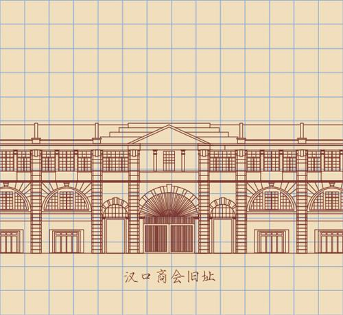

所在街区：江汉区中山大道949号 建筑风格：古典主义 建造年代：1921年 现存情况：商铺

1919年，各界商贾协商筹备，募集捐款白银91835两，由汉协盛营造厂承建汉口总商会大楼，1921年元旦正式启用。由于地处市中心，这栋大楼随即成为当时重要的政治、经贸、文化活动的首选之地。汉口商会从创立到1949年消亡，为武汉的政治、经济、城市、文化建设作出了巨大的贡献。这栋大楼在"文革"后成为某机关大楼，改革开放后才归还工商联。1999年由政府拨款、民营企业家捐助，总商会大楼修葺一新，并被列入"优秀历史建筑"。